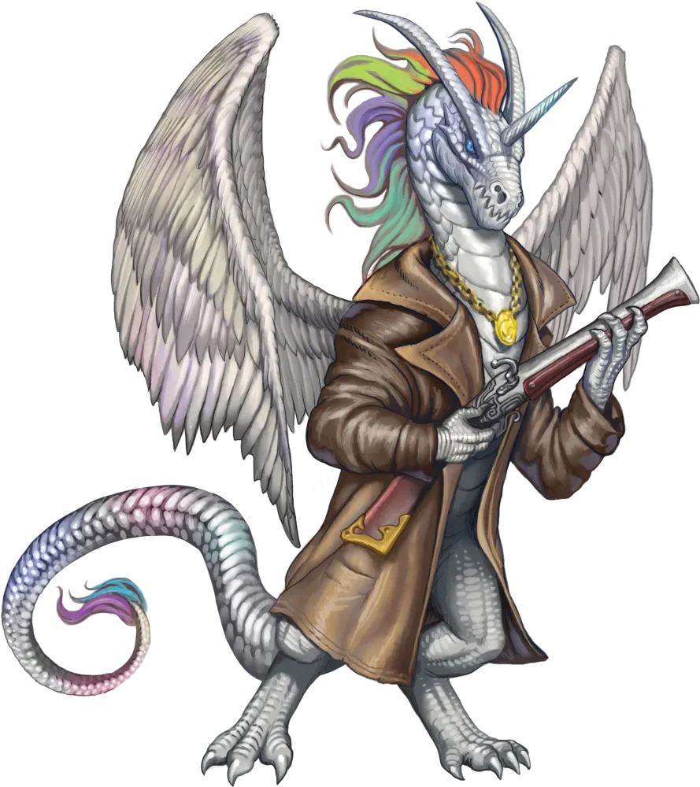
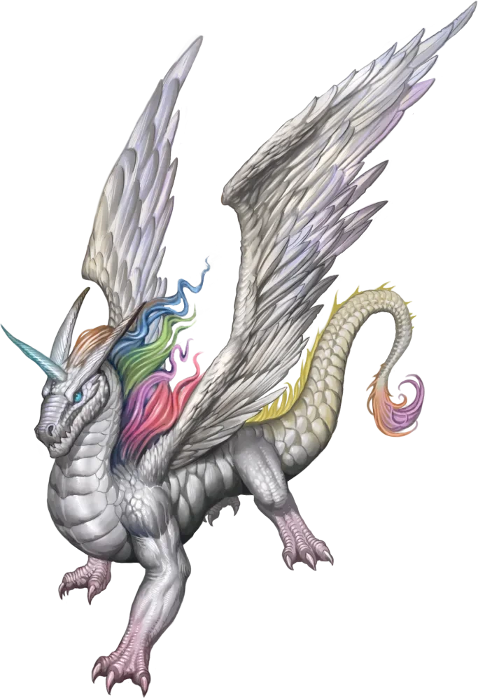
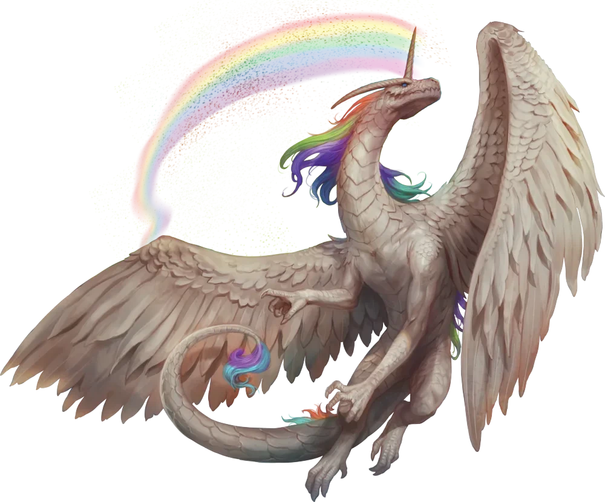

|
巨龙亘古长存，伟力堪比传说，令世间万族为之敬畏、战栗与向往。在某些文化中，巨龙本身便是力量的象征；而在另一些文化里，它们则是王权的先驱。但对巨龙而言，这不过是它们的本色而已。这一朴素的真理从根本上塑造了巨龙与其他种族之间的关系。然而，并非所有巨龙都像人类故事书中所描绘的那样，终日沉睡在堆满财宝的洞窟里，坐等某个鲁莽的冒险者斗胆前来觊觎它们的宝库。有时候，冒险者正是巨龙自己！ 你出身于一脉爱好和平的隐士世系，以向造访的凡人赐予指引与启迪为傲。你属于仙灵龙家族的一员。你的关联伤害类型为光耀，且你的吐息武器为长 30 尺、宽 5 尺线状的灼热虹彩光束，需进行敏捷豁免。 巨龙特质属性值提升。你的魅力值提升 2 点。你自选的一项属性值提升 1 点。 年龄。任何年龄段的巨龙都可以举行永恒之光仪式，因此哪怕是一条刚完成仪式的初生永光龙，严格来说也可能已经活了数千岁。不过，仪式澎湃的魔法能量会洗去衰老的痕迹。从仪式中苏醒的初生永光龙洋溢着青春活力与无限潜能。尽管部分学者持不同看法，但只要不死于暴力或其他灾祸，永光龙的寿命与传统派巨龙同样漫长。 阵营。永光龙的龙族血统会强烈影响其信念，但影响程度远不如同血统的传统派巨龙。例如，银永光龙往往是善良的捍卫者，而黑永光龙则往往狡诈刻薄。然而，永光龙深知龙脉并非不可违逆的宿命。任何永光龙都可以完全抛弃先祖的旧习，去开拓属于自己的道路。 体型。除非一条永光龙将自身魔力专注于增大体型（许多永光龙都会这样做），否则它们的体型并不会比常见的类人种族更大。你的体型可在小型或中型之间自选。 速度。你的基础步行速度为 30 尺。 黑暗视觉。你同样具备传统派巨龙的敏锐感官。在距离你 60 尺范围内，你可以将微光光照视作明亮光照，将黑暗视作微光光照。你在黑暗中无法分辨颜色，只能看到灰度的影像。 龙之馈赠。你从巨龙职业所列的龙之馈赠中获得一项龙之馈赠。如果某项馈赠具有先决条件，你必须满足其先决条件才能获得它。 龙类。你的生物种类为龙类，而非类人生物。 天生武器。除常规的徒手打击外，你还获得两种天生武器攻击：啃咬攻击与爪击攻击。你的啃咬攻击造成 1d6 点穿刺伤害；你的爪击攻击造成 1d4 点挥砍伤害。 你必须至少有一只手空闲才能发动爪击攻击。 你在进行爪击攻击的攻击检定和伤害掷骰时可以使用敏捷代替力量，但啃咬攻击不适用。 语言。你能够说、读、写通用语和龙语。 辉光龙角。你的龙角闪耀着斑斓的魔法光芒，散发出半径 20 尺的明亮光照以及额外 20 尺的微光光照。你可以用一个附赠动作熄灭、重新点亮这束光芒，或是改变其单一或多种色彩。每当你施展法术或使用吐息武器时，龙角散发的光芒都会变得更加明亮：如果光芒此前处于熄灭状态，它会立即重新点亮；否则，直至你的下一回合结束前，你龙角散发的明亮光照与微光光照半径均增加 20 尺。 永光天角龙背景设定天角龙天生恋家喜静。在绝大多数时间里，他们都满足于精心打理自己的私人领地――仅凭他们的存在，那片土地便会生机盎然、欣欣向荣――并对慕名上门寻求援助、指引与扶持的恳求者作出裁断。尽管天角龙乐于助人，但他们更陶醉于世人主动登门求见这一事实本身：他们的传说声播四海，声誉更是高洁无瑕，以至于四方来客不惜千里跋涉，只求能与他们交谈片刻。这种知足常乐、避世隐居与清高孤傲的交织，使得天角龙极少会选择举行永恒之光仪式。 虽然确实有一些天角龙是出于崇高正义或舍己为人的初衷而选择成为永光龙，但大多数天角龙举行仪式其实都是出于一己私心。常见的情况包括：年少体弱的天角龙无力保护自己选定的家园免遭滔天巨祸，或是年迈衰老的天角龙早已被家园之外的世人遗忘、自尊心苦苦渴求他人的关注。在极少数情况下，则是天角龙自身渴望追寻某种在故园中无法获得的事物――例如渴望游历四方看一看广阔天地、结识周边地区的芸芸众生，或是逃离独居隐逸的单调乏味。 永光天角龙在适应全新生活与陌生环境时面临的第一道难关，便是他们对短寿民族及其社会与生俱来的不信任感。部分天角龙会通过寻访精灵、侏儒等世界观相近的长寿族裔聚居地并在其中结交挚友，从而彻底绕开这一难题。而对大多数永光天角龙而言，由于每日都不得不与节奏急促、往往污浊腐败的凡人社会打交道，他们原本孤高挑剔的性情也会随着时间推移与世俗磨砺而渐渐柔和下来。许多永光天角龙在闯荡家园之外的世界时被迫弄脏自己的龙爪，久而久之打破了某些禁忌，或是在精神层面上染上了世俗尘垢。无论初衷如何，选择成为永光龙的天角龙要么放宽自己在择友标准上的高洁道德要求，要么便只能孤独终老。 在传统派天角龙眼中，永光天角龙只要主动与那些不配与之为伍的鄙俗灵魂往来――哪怕交集再怎么短暂――便已受到了玷污。这导致绝大多数永光天角龙在同族之中都沦为了被排斥的异类。反过来，永光天角龙通常也认为传统派天角龙一直躲在温室里闭门造车，根本不懂何为现实世界。在永光天角龙看来，传统派脱离广阔天地独善其身，纯粹是固执己见到不愿去真正理解这个世界；这种故步自封的无知绝非什么值得骄傲的美德，反而只配令人怜悯。 大多数永光天角龙都会发现，若只与完全符合自身严苛美德与纯净标准的人交往合作，在世间简直寸步难行；于是他们学会了与那些虽有明显缺点或小毛病、但所投身之事业正义凛然的同伴携手共事。他们倾向于加入行善济世的慈善组织，以及纯粹出于本心良善而非贪图悬赏报酬去行侠仗义的冒险小队。他们与吟游诗人（天角龙十分欣赏其才华）、圣武士（其崇高理想往往与天角龙最为契合）以及悉心呵护周遭环境的德鲁伊和游侠相处得最为融洽。永光天角龙自己也常常成为杰出的吟游诗人或圣武士，不过也有相当一部分人转而培育自身与自然天地及秀美胜景的联结，成为德鲁伊或游侠。还有一些永光天角龙在完成蜕变之时，体内便已觉醒了术士的魔法力量。 ……小心尝到龙角的厉害归根结底，天角龙高傲清高、自以为是，而且相当爱对旁人评头论足。这些特质在他们自家的领地内固然相得益彰，但若想在广阔世界中结交朋友、与人融洽相处，可就不太妙了。虽然大多数永光天角龙都不得不降低自己的择友标准，但也并非毫无例外。我发现，一旦永光天角龙寻得了值得信赖的盟友或是自己想要守护的对象，便往往会展现出近乎偏执的赤胆忠心。而倘若你胆敢招惹天角龙的核心圈子……嗯，下场自然不言而喻。 延伸阅读：对应怪物图鉴：天角龙 ・ 主书通用巨龙种族特质 ・ 巨龙职业 ・ 本卷新增龙之馈赠 |
 天角龙（Alicorn Dragon）  天角龙  天角龙 |